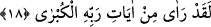

Baklî’ye göre işte bu sebeple Allah bu âyette Nebî (a.s.)’nin gözünü kapatmış olduğunu
zikretmemiştir. Bu da Habîb (a.s.)’in istikâmet mahallinde iken Rabb’ini müşâhedeye
imkân verilmesi ve ona teşvik edilmesi nev’indendir. Zîra Nebî (a.s.) içerisinde şeref
ve fazilet bulunmuş olsa da Rabb’inin dışındaki hiçbir şeye meylde bulunmamıştır.
Şair şöyle der:
Allah’ın hatırlatması tamamıyla kalbe,
Ümid ettirmesi de tamamen gözlere yöneliktir.
Keşfü’l-esrâr’da şöyle gelmiştir: Musâ (a.s.) Hakk’ı görmek isteyince “Rabbim!
Bana Kendini göster, Sana bakayım” dediğinde gayret/kıskançlık kılıcıyla “Sen Beni
göremezsin” (el-A‘râf, 7/143) cevabı verildi. Sonra cürüm dolu bu sorudan vazgeçti
“Sana tevbe ettim” diyerek bu talebden geri döndü. Hz. Muhammed Mustafa (s.a.)’e
gelince O’na da; “İki gözünü dikme!” (el-Hicr, 15/88) ifâdesiyle gayret sürmesi
çekilmişti. O’na denildi ki: “Ey Muhammed! Bizi görmek isteyen gözünü başka bir şeye
vermeyesin.” O da: “Göz şaşmadı, sınırı da 3aşmadı.” İzzet bağıyla gözünü bağladı ve
hal diliyle şöyle dedi:
Ey azîz seni ziyaret edeceğim güne kadar,
Kendi gözümü bağladım ve açmam artık.
Şüphesiz Hz. Peygamber (s.a.) Hakk’a ulaştı. Celâl ve cemâl sâhibi Hakk’ın cemâl ve
celâli görüşüne arz edildi ki “Gözünün gördüğünü gönlü yalanlamadı” buyrulmuştur.
Sana sırrımı açınca bütün vücudum zikir kesilir
Gözümü açınca bütün kemâlini görürüm.
Demişlerdir ki Mûsâ (a.s.) Hakk’a mürâcaat etti, kendisinde heybet ve azamet nuru
olduğundan ona bakan herkesin görmesi kayboldu. Hz. Muhammed (s.a.) ise Hazret’e
müşâhede ile yöneldi, kendisinde üns nûru olduğundan kendisine bakan herkesin
görmesi ziyadeleşti. O makam telvîn ehlinin, bu makam ise temkîn ehlinin makamıdır.
18. Andolsun o, Rabbinin en büyük âyetlerinden bir kısmını gördü.
“Andolsun” Muhammed (a.s.) Mi’râc gecesinde “Rabbi’nin en büyük” azametli
“âyetlerinden bazılarını gördü.” Ona mülk ve melekût âleminin gözle ifâde
edilemeyen güzellikleri gösterildi.
İsrâ olayı Münâsebât adı tefsîrde belirtildiği üzere çoğu âlimler tarafından kabul